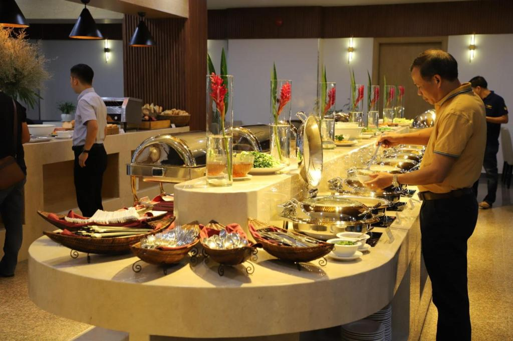
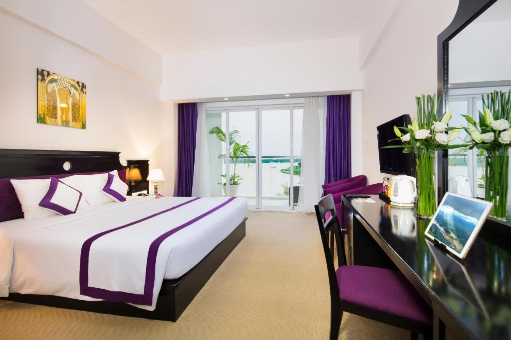

Hình Ảnh Nổi Bật




Giới Thiệu
Nằm trên bờ Sông Hậu và cách bờ sông 2 phút đi bộ, TTC Hotel - Can Tho tọa lạc ở trung tâm thành phố Cần Thơ. Với tầm nhìn ra toàn cảnh thành phố và dòng sông, khách sạn 10 tầng này có hồ bơi ngoài trời, lễ tân 24 giờ và Wi-Fi miễn phí trong toàn bộ khuôn viên.
TTC Hotel - Can Tho nằm cách Chùa Ông, Chợ Đêm và Sân vận động Cần thơ 500 m. Chỗ nghỉ nằm trong bán kính chỉ 6 km từ chợ nổi Cái Răng và 7 km từ sân bay Cần Thơ. Thành phố Hồ Chí Minh cách đó khoảng 3 giờ lái xe.
Phòng nghỉ lắp máy điều hòa tại đây có sàn lát gạch và được trang bị đầy đủ tiện nghi với tủ để quần áo, bàn làm việc, truyền hình cáp và khu vực ghế ngồi. Trong phòng cũng có minibar và tiện nghi pha trà/cà phê. Phòng tắm riêng được bố trí máy sấy tóc, áo choàng tắm và đồ vệ sinh cá nhân miễn phí.
TTC Hotel - Can Tho có trung tâm dịch vụ doanh nhân, sòng bạc và hộp đêm. Du khách có thể tận hưởng buổi tiệc nướng/karaoke tại khuôn viên hoặc thư giãn với dịch vụ mát-xa tại spa. Dịch vụ giữ hành lý, dịch vụ giặt là và tiện nghi tổ chức tiệc/hội họp được cung cấp theo yêu cầu.
Nhà hàng TTC trong khuôn viên phục vụ các món ăn Á-Âu ngon từ 06:00 đến 22:00 hàng ngày. Một loạt các loại cocktail, bia và rượu vang được phục vụ tại quán Alfresco Cafe, nơi có tầm nhìn ra toàn cảnh dòng sông.
Thông Tin Liên Hệ
- Số điện thoại: 0292 3812 210
- Địa chỉ: 2 Hai Bà Trưng, Quận Ninh Kiều, Thành phố Cần Thơ
- Email: info@ttchospitality.vn
- Website: www.ttchospitality.vn
- Giờ hoạt động: 24/7